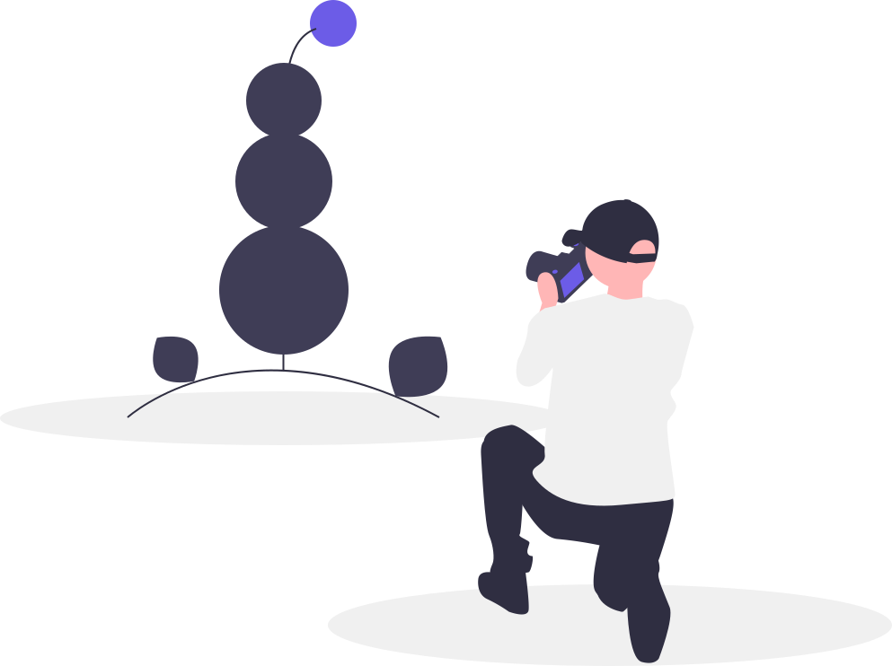

<div class="about-us-container" dir="rtl" #aboutUsRef>
  <ng-container>
    <section
      class="about-section master-plan"
      [@slideYUp]="show && !(mobileService.isHandset$ | async)"
      [@slideXRight]="show && (mobileService.isHandset$ | async)"
    >
      
      <p>
        {{ sections[0] }}
      </p>
    </section>
    <section
      class="about-section photo-shot"
      [@slideYDown]="show && !(mobileService.isHandset$ | async)"
      [@slideXLeft]="show && (mobileService.isHandset$ | async)"
    >
      <p>
        {{ sections[1] }}
      </p>
      
    </section>
    <section
      class="about-section success"
      [@slideYUp]="show && !(mobileService.isHandset$ | async)"
      [@slideXRight]="show && (mobileService.isHandset$ | async)"
    >
      
      <p>
        {{ sections[2] }}
      </p>
    </section>
  </ng-container>
</div>
